Benchmarking Filesystems Part II
Introduction
After the last article was published, I have received more than a dozen requests for a second filesystem benchmark using the 2.6 kernel. Since that time, I have converted entirely to XFS for every Linux machine I use, so I may be a bit bias regarding the XFS filesystem. I tried to keep the hardware roughly the same. Instead of a Western Digital 250GB and Promise ATA/100 controller, I am now am using a Seagate 400GB and Maxtor ATA/133 Promise controller. The physical machine remains the same, there is an additional 664MB of swap and I am now running Debian Etch. In the previous article, I was running Slackware 9.1 with custom compiled filesystem utilities. I've added a small section in the beginning that shows the filesystem creation and mount time, I've also added a graph showing these new benchmarks. After the first round of benchmarks, I received a sleuth of e-mails asking for the raw numbers. The numbers are now included in tables at the end of this e-mail for both the last and current set of benchmarks.
What's new?
1) Unify the graphs so all but one are the same type.
2) Run tests with a recent distribution and the 2.6.14.4
kernel.
3) Included the ReiserFS Version 4 benchmarks.
4) Included the raw data in matrix form at the bottom of this
page.
5) Included three additional graphs:
a) Creation time to make the actual
filesystem.
b) Time it takes to mount the filesystem.
c) The amount of space available after formatting
with the default options.
Specifications
Hardware
COMPUTER: Dell Optiplex GX1
CPU: Pentium III 500MHZ
RAM: 768MB
SWAP: 2200MB
CONTROLLER: Maxtor Promise ATA/133 TX2 - IN PCI SLOT #1
DRIVES USED: 1] Seagate 400GB ATA/100 8MB CACHE 7200RPM
2] Maxtor 61.4GB ATA/66 2MB CACHE 5400RPM
DRIVE TESTED: The Seagate 400GB.
Software
LIBC VERSION: 2.3.5
KERNEL: linux-2.6.14.4
COMPILER USED: gcc-4.0.3
EXT2: e2fsprogs-1.38/sbin/mkfs.EXT2
EXT3: e2fsprogs-1.38/sbin/mkfs.EXT3
JFS: jfsutils-1.1.8/sbin/mkfs.jfs
REISERFSv3: reiserfsprogs-3.6.19/sbin/mkreiserfs
REISERFSv4: reiser4progs-1.0.5/sbin/
(Used patch reiser4-for-2.6.14-1.patch w/ libaal-1.0.5 + reiser4progs-1.0.5)
XFS: xfsprogs-2.6.36/sbin/mkfs.xfs
Tests Performed
001] Create 10,000 files with touch in a directory.
002] Run 'find' on that directory.
003] Remove the directory.
004] Create 10,000 directories with mkdir in a directory.
005] Run 'find' on that directory.
006] Remove the directory containing the 10,000 directories.
007] Copy kernel tarball from other disk to test disk.
008] Copy kernel tarball from test disk to other disk.
009] Untar kernel tarball on the same disk.
010] Tar kernel tarball on the same disk.
011] Remove kernel source tree.
012] Copy kernel tarball 10 times.
013] Create 1GB file from /dev/zero.
014] Copy the 1GB file on the same disk.
015] Split a 10MB file into 1000/1024/2048/4096/8192 byte pieces.
016] Copy kernel source tree on the same disk.
017] Cat a 1GB file to /dev/null.
NOTE1: Between each test run, a 'sync' and 10 second sleep
were performed.
NOTE2: Each file system was tested on a cleanly made file
System.
NOTE3: All file systems were created using default options.
NOTE4: All tests were performed with the cron daemon killed
and with 1 user logged in.
NOTE5: All tests were run 3 times and the average was taken,
if any tests were questionable, they were re-run and
checked with the previous average for consistency.
Creating the Filesystems
EXT2
p500:~# mkfs.EXT2 /dev/hde1
mke2fs 1.38 (30-Jun-2005)
Filesystem label=
OS type: Linux
Block size=4096 (log=2)
Fragment size=4096 (log=2)
48840704 inodes, 97677200 blocks
4883860 blocks (5.00%) reserved for the super user
First data block=0
2981 block groups
32768 blocks per group, 32768 fragments per group
16384 inodes per group
Superblock backups stored on blocks:
32768, 98304, 163840, 229376, 294912, 819200, 884736, 1605632, 2654208,
4096000, 7962624, 11239424, 20480000, 23887872, 71663616, 78675968
Writing inode tables: done
Writing superblocks and filesystem accounting information: done
This filesystem will be automatically checked every 34 mounts or
180 days, whichever comes first. Use tune2fs -c or -i to override.
p500:~#
EXT3
p500:~# mkfs.EXT3 /dev/hde1
mke2fs 1.38 (30-Jun-2005)
Filesystem label=
OS type: Linux
Block size=4096 (log=2)
Fragment size=4096 (log=2)
48840704 inodes, 97677200 blocks
4883860 blocks (5.00%) reserved for the super user
First data block=0
2981 block groups
32768 blocks per group, 32768 fragments per group
16384 inodes per group
Superblock backups stored on blocks:
32768, 98304, 163840, 229376, 294912, 819200, 884736, 1605632, 2654208,
4096000, 7962624, 11239424, 20480000, 23887872, 71663616, 78675968
Writing inode tables: done
Creating journal (32768 blocks): done
Writing superblocks and filesystem accounting information: done
This filesystem will be automatically checked every 34 mounts or
180 days, whichever comes first. Use tune2fs -c or -i to override.
p500:~#
JFS
p500:~# mkfs.jfs -q /dev/hde1 mkfs.jfs version 1.1.8, 03-May-2005 \ Format completed successfully. 390708801 kilobytes total disk space. 0.03user 1.01system 0:02.62elapsed 40%CPU (0avgtext+0avgdata 0maxresident)k 0inputs+0outputs (0major+224minor)pagefaults 0swaps p500:~#
REISERFS V3
p500:~# mkreiserfs -q /dev/hde1 mkreiserfs 3.6.19 (2003 www.namesys.com) A pair of credits: Continuing core development of ReiserFS is mostly paid for by Hans Reiser from money made selling licenses in addition to the GPL to companies who don't want it known that they use ReiserFS as a foundation for their proprietary product. And my lawyer asked 'People pay you money for this?'. Yup. Life is good. If you buy ReiserFS, you can focus on your value add rather than reinventing an entire FS. Chris Mason wrote the journaling code for V3, which was enormously more useful to users than just waiting until we could create a wandering log filesystem as Hans would have unwisely done without him. Jeff Mahoney optimized the bitmap scanning code for V3, and performed the big endian cleanups. p500:~#
REISERFS V4
p500:~# mkfs.reiser4 -y /dev/hde1 p500:~#
XFS
p500:~# mkfs.xfs -f /dev/hde1
meta-data=/dev/hde1 isize=256 agcount=16, agsize=6104825 blks
= sectsz=512
data = bsize=4096 blocks=97677200, imaxpct=25
= sunit=0 swidth=0 blks, unwritten=1
naming =version 2 bsize=4096
log =internal log bsize=4096 blocks=32768, version=1
= sectsz=512 sunit=0 blks
realtime =none extsz=65536 blocks=0, rtextents=0
p500:~#
Benchmark Set 1 of 4

Both extended filesystem revisions take a backseat to their
counterparts.
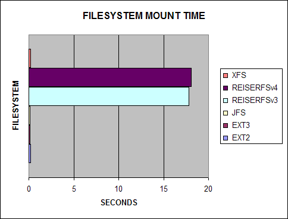
ReiserFS takes a VERY long time to mount the filesystem. I included
this test because I found it actually takes minutes to hours
mounting a ReiserFS filesystem on a large RAID volume.
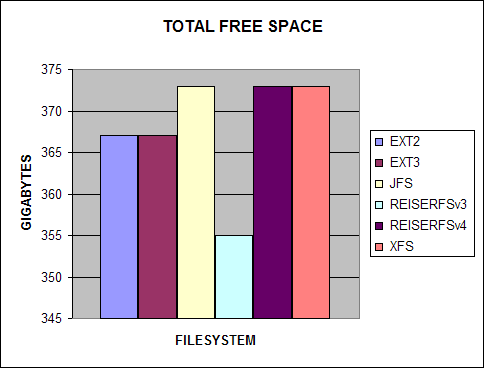
People always complain about how hard drive manufacturers equate
1000 kilobytes as a megabyte, well the filesystem is also part of
the problem!
Benchmark Set 2 of 4
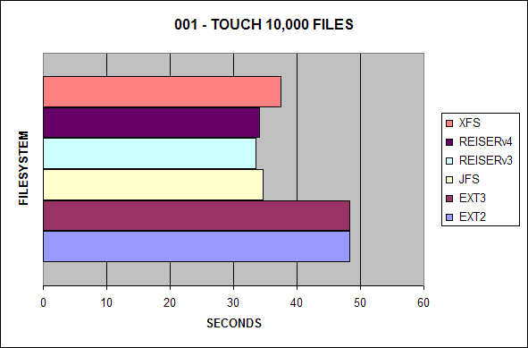
In the first test, ReiserFSv3 continues to lead the pack, with
ReiserFSv4 and JFS not far behind.
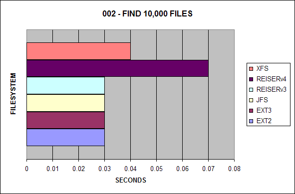
ReiserFSv4 is now the slowest filesystem to search for files,
previously, it had been XFS.
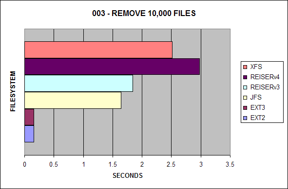
XFS is no longer the slowest filesystem for removing many files.
However, EXT2 and EXT3 still win by far.
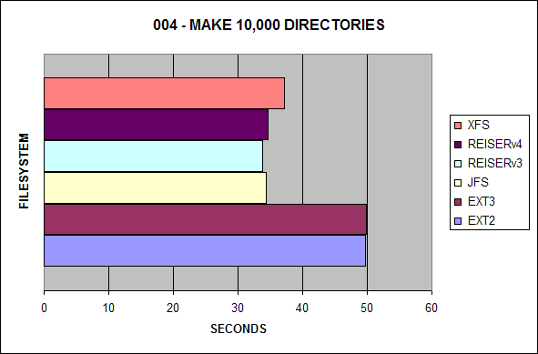
Similar to the first test, EXT2 and EXT3 lag behind the other
journaling filesystems.
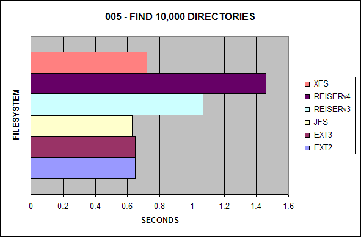
Contrary to the first set of benchmarks I ran, it appears XFS has
slightly improved, ReiserFSv4 is now the slowest with ReiserFSv3
behind it. Also in the previous test, EXT3 had suffered a huge
performance hit in this area, it is now comparable to EXT2.
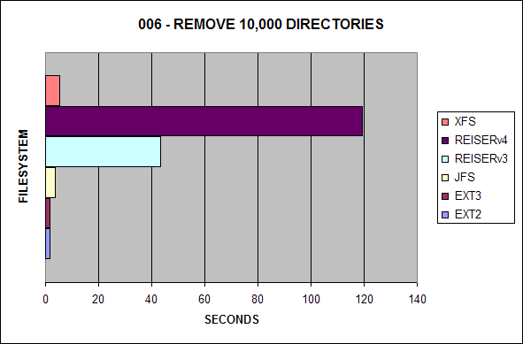
It appears ReiserFS v3 and v4 have some serious issues deleting
large numbers of directories.
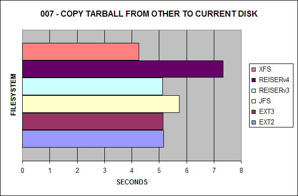
In the first benchmark test, EXT2 won the test, now XFS is the new
leader.
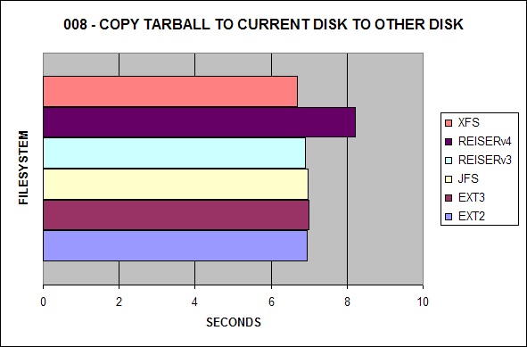
This benchmark represents how fast the tar ball can be read from
each file system. Surprisingly, XFS now exceeds EXT3.
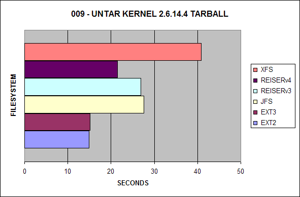
ReiserFSv3 won the last benchmarking round; however, EXT2 and EXT3
now dominate this test.

The best journaling file system here used to be ReiserFSv3;
however, JFS now wins the benchmark.
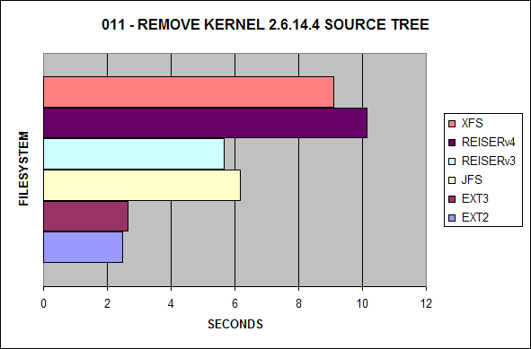
ReiserFSv3 used to be the winner, it is now ousted by EXT2 and
EXT3.
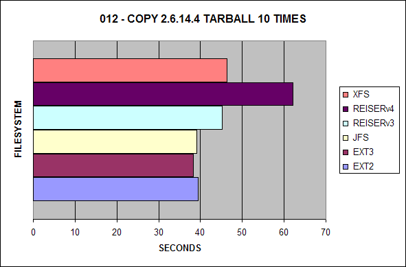
The biggest difference here is most of the filesystems have evened
out compared to the first benchmarking test.
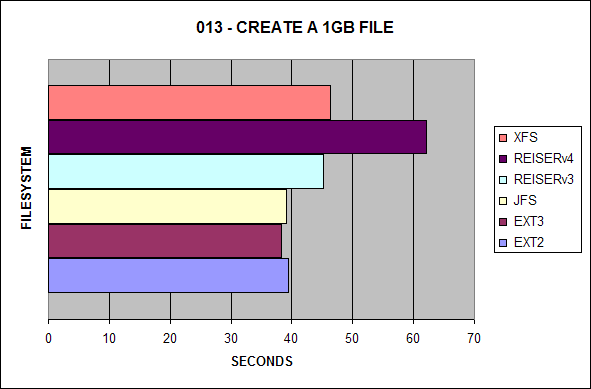
This test has remained relatively the same.
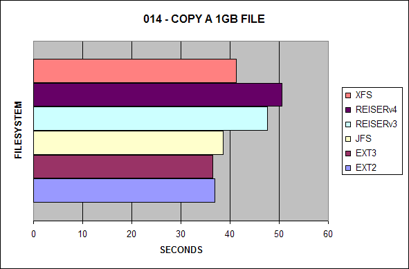
Once again, mostly the same; however, it is important to note that
the performance of EXT2 and EXT3 are much closer this time.
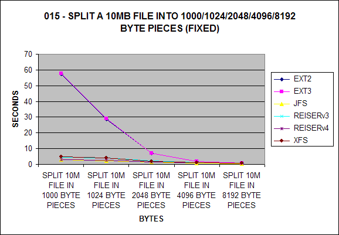
EXT2 and EXT3 take the biggest hit up to about 4096 bytes which is
surprising.
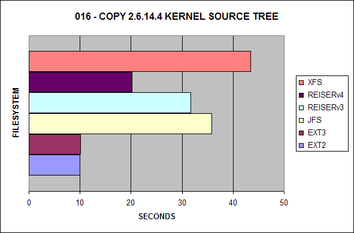
EXT2 and EXT3 now outperform ReiserFSv3. In most of these
benchmarks thus far, ReiserFSv4 is the slowest; however, here we
see that V4 is about 12 seconds faster than V3.
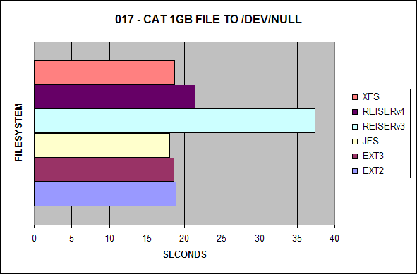
JFS continues to lead this test with EXT2 and EXT3 not far
behind.
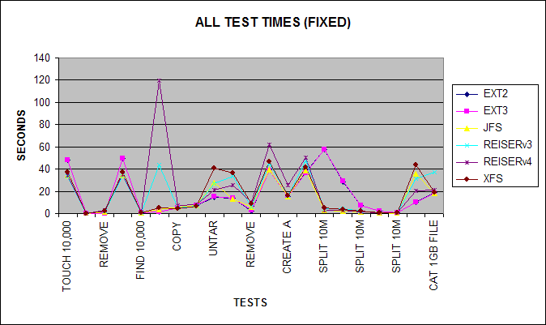
The following represents the combined test times.
Benchmark Set 3 of 4
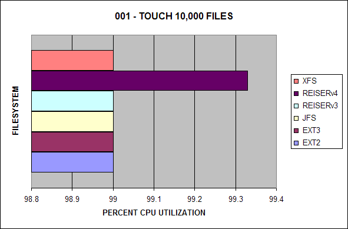
The following is the CPU utilization for this test.
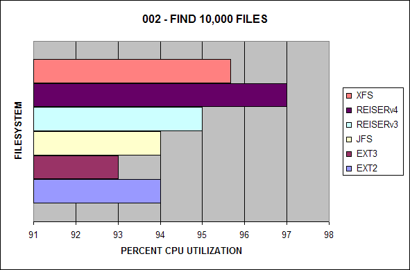
The following is the CPU utilization for this test.
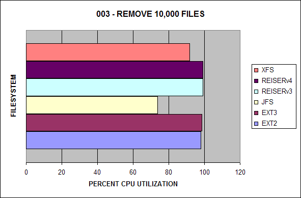
The following is the CPU utilization for this test.
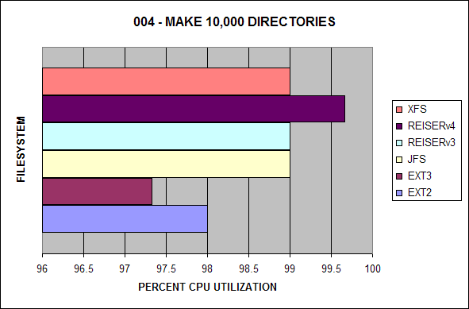
The following is the CPU utilization for this test.
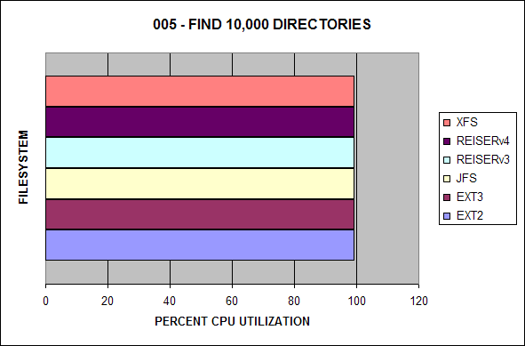
The following is the CPU utilization for this test.
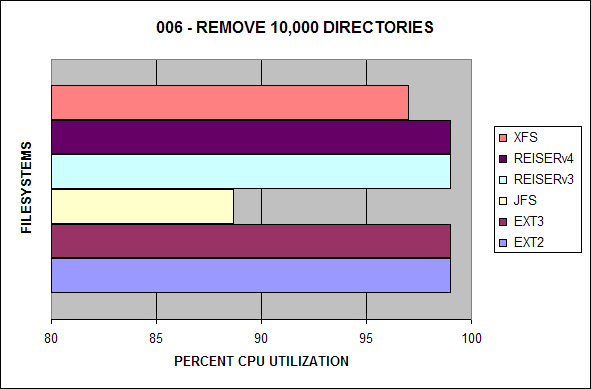
The following is the CPU utilization for this test.
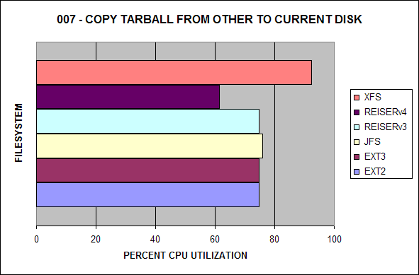
The following is the CPU utilization for this test.

The following is the CPU utilization for this test.
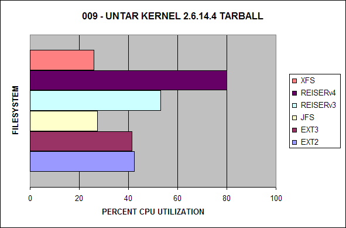
The following is the CPU utilization for this test.
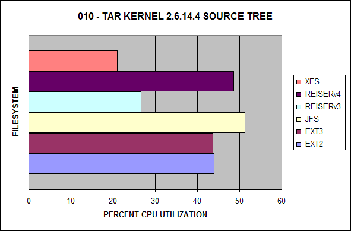
The following is the CPU utilization for this test.
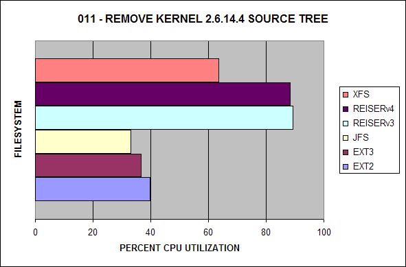
The following is the CPU utilization for this test.
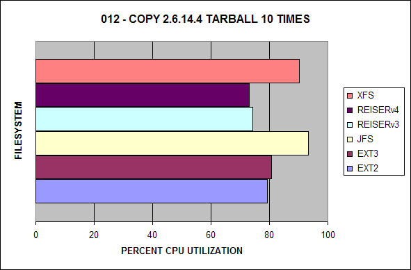
The following is the CPU utilization for this test.
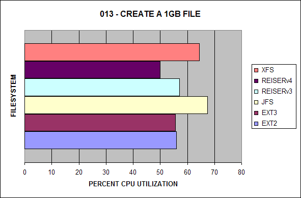
The following is the CPU utilization for this test.
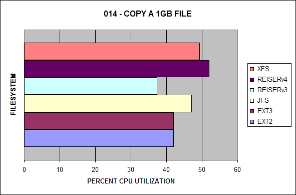
The following is the CPU utilization for this test.
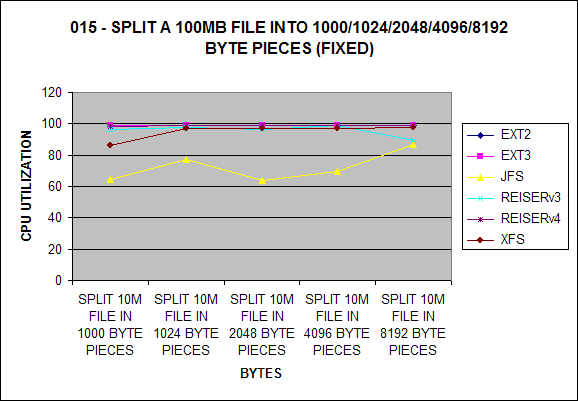
The following is the CPU utilization for this test.
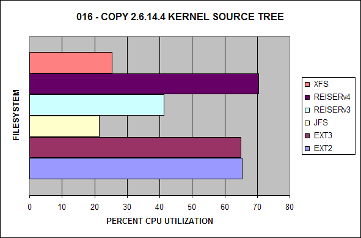
The following is the CPU utilization for this test.
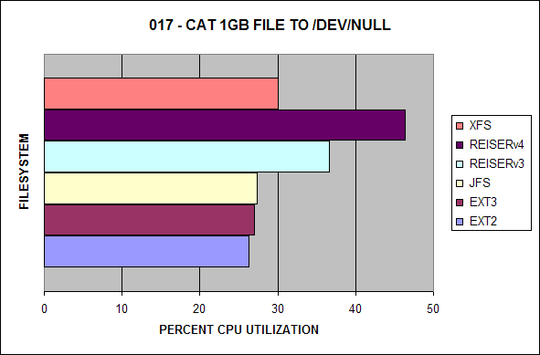
The following is the CPU utilization for this test.
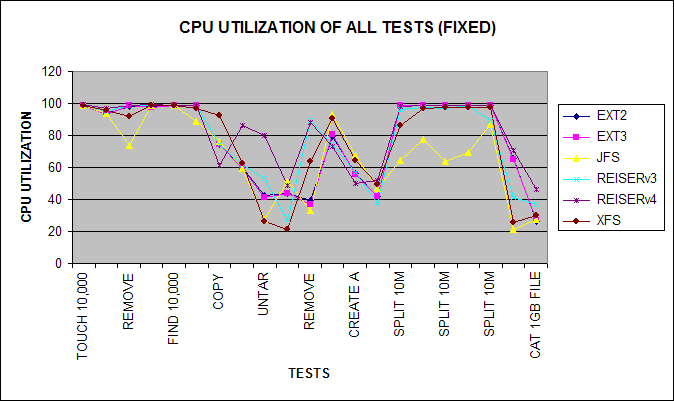
Here is a line chart of representing all of the test times.
Benchmark Set 4 of 4

Here is a composite of the total test time for all tests.
File Benchmark II Data
| Seconds Elapsed | |||||||
| Test | Task | EXT2 | EXT3 | JFS | REISERv3 | REISERv4 | XFS |
| 001 | Touch 10,000 Files | 48.25 | 48.25 | 34.59 | 33.59 | 34.08 | 37.47 |
| 002 | Find 10,000 Files | 0.03 | 0.03 | 0.03 | 0.03 | 0.07 | 0.04 |
| 003 | Remove 10,000 Files | 0.16 | 0.16 | 1.64 | 1.84 | 2.98 | 2.51 |
| 004 | Make 10,000 Directories | 49.76 | 49.87 | 34.32 | 33.74 | 34.68 | 37.17 |
| 005 | Find 10,000 Directories | 0.65 | 0.65 | 0.63 | 1.07 | 1.46 | 0.72 |
| 006 | Remove 10,000 Directories | 1.66 | 1.67 | 3.58 | 43.48 | 119.42 | 5.39 |
| 007 | Copy Tarball from Other to Current Disk | 5.17 | 5.15 | 5.74 | 5.12 | 7.34 | 4.26 |
| 008 | Copy Tarball from Current to Other Disk | 6.96 | 7.00 | 6.97 | 6.89 | 8.21 | 6.69 |
| 009 | UnTAR Kernel 2.6.14.4 Tarball | 14.92 | 15.19 | 27.64 | 26.92 | 21.45 | 40.81 |
| 010 | TAR Kernel 2.6.14.4 Source Tree | 14.05 | 14.08 | 13.05 | 33.49 | 25.82 | 36.19 |
| 011 | Remove Kernel 2.6.14.4 Source Tree | 2.47 | 2.64 | 6.17 | 5.65 | 10.15 | 9.10 |
| 012 | Copy 2.6.14.4 Tarball 10 Times | 39.48 | 38.29 | 39.13 | 45.15 | 62.16 | 46.34 |
| 013 | Create a 1GB File | 15.02 | 15.02 | 15.12 | 15.96 | 25.40 | 15.87 |
| 014 | Copy a 1GB File | 36.87 | 36.51 | 38.54 | 47.60 | 50.63 | 41.25 |
| 015 | Split 10M File into 1000 Byte Pieces | 57.26 | 57.77 | 2.99 | 4.35 | 2.95 | 4.87 |
| 016 | Split 10M File into 1024 Byte Pieces | 28.73 | 28.97 | 2.24 | 4.04 | 2.61 | 4.01 |
| 017 | Split 10M File into 2048 Byte Pieces | 7.02 | 6.98 | 1.39 | 2.26 | 1.55 | 1.95 |
| 018 | Split 10M File into 4096 Byte Pieces | 1.85 | 1.83 | 0.67 | 1.05 | 0.99 | 0.98 |
| 019 | Split 10M File into 8192 Byte Pieces | 0.58 | 0.58 | 0.36 | 0.56 | 0.62 | 0.57 |
| 020 | Copy 2.6.14.4 Kernel Source Tree | 10.02 | 10.06 | 35.76 | 31.64 | 20.17 | 43.42 |
| 021 | CAT 1GB File to /dev/null | 18.90 | 18.59 | 18.00 | 37.33 | 21.37 | 18.70 |
| CPU Utilization | |||||||
| Test | Task | EXT2 | EXT3 | JFS | REISERv3 | REISERv4 | XFS |
| 001 | Touch 10,000 Files | 99.00 | 99.00 | 99.00 | 99.00 | 99.33 | 99.00 |
| 002 | Find 10,000 Files | 94.00 | 93.00 | 94.00 | 95.00 | 97.00 | 95.66 |
| 003 | Remove 10,000 Files | 98.00 | 98.66 | 73.66 | 99.00 | 99.00 | 91.66 |
| 004 | Make 10,000 Directories | 98.00 | 97.33 | 99.00 | 99.00 | 99.66 | 99.00 |
| 005 | Find 10,000 Directories | 99.00 | 99.00 | 99.00 | 99.00 | 99.00 | 99.00 |
| 006 | Remove 10,000 Directories | 99.00 | 99.00 | 88.66 | 99.00 | 99.00 | 97.00 |
| 007 | Copy Tarball from Other to Current Disk | 74.66 | 74.66 | 76.00 | 74.66 | 61.33 | 92.33 |
| 008 | Copy Tarball from Current to Other Disk | 60.00 | 59.33 | 59.33 | 62.00 | 86.00 | 62.66 |
| 009 | UnTAR Kernel 2.6.14.4 Tarball | 42.33 | 41.33 | 27.33 | 53.00 | 80.00 | 26.00 |
| 010 | TAR Kernel 2.6.14.4 Source Tree | 44.00 | 43.66 | 51.33 | 26.66 | 48.66 | 21.00 |
| 011 | Remove Kernel 2.6.14.4 Source Tree | 39.66 | 36.66 | 33.00 | 89.33 | 88.33 | 63.66 |
| 012 | Copy 2.6.14.4 Tarball 10 Times | 79.33 | 80.66 | 93.33 | 74.33 | 73.00 | 90.33 |
| 013 | Create a 1GB File | 56.00 | 55.66 | 67.33 | 57.00 | 50.00 | 64.33 |
| 014 | Copy a 1GB File | 42.00 | 42.00 | 47.00 | 37.33 | 52.00 | 49.33 |
| 015 | Split 10M File into 1000 Byte Pieces | 99.00 | 99.00 | 64.33 | 96.33 | 98.00 | 86.33 |
| 016 | Split 10M File into 1024 Byte Pieces | 99.00 | 99.00 | 77.33 | 97.66 | 99.00 | 97.00 |
| 017 | Split 10M File into 2048 Byte Pieces | 99.00 | 99.00 | 64.00 | 96.66 | 99.00 | 97.33 |
| 018 | Split 10M File into 4096 Byte Pieces | 99.00 | 99.00 | 69.33 | 99.00 | 99.00 | 97.33 |
| 019 | Split 10M File into 8192 Byte Pieces | 99.00 | 99.00 | 87.00 | 89.66 | 99.00 | 97.66 |
| 020 | Copy 2.6.14.4 Kernel Source Tree | 65.33 | 65.00 | 21.33 | 41.33 | 70.33 | 25.33 |
| 021 | CAT 1GB File to /dev/null | 26.33 | 27.00 | 27.33 | 36.66 | 46.33 | 30.00 |
File Benchmark I Data
Conclusion
With the second round of filesystem benchmarks, I hope everyone is now satisfied with the benchmarks using the 2.6 kernel. What I gleam from these benchmarks is both EXT2 and EXT3 are now roughly the same speeds in the majority of the tests. It also appears the XFS has improved in the majority of the tests. ReiserFSv3 has slowed in many of the tests with ReiserFSv4 being the slowest in most of the tests. It is important to note that JFS has improved in some of the tests. Personally, I still choose XFS for filesystem performance and scalability.
| Seconds Elapsed | |||||||
| Test | Filesystem | EXT2 | EXT3 | JFS | REISER | XFS | |
| 001 | Touch 10,000 Files | 34.14 | 40.98 | 24.50 | 23.03 | 27.13 | |
| 002 | Find 10,000 Files | 0.02 | 0.02 | 0.02 | 0.02 | 0.04 | |
| 003 | Remove 10,000 Files | 0.14 | 0.36 | 1.37 | 1.76 | 2.52 | |
| 004 | Make 10,000 Directories | 73.53 | 148.46 | 24.11 | 23.42 | 29.19 | |
| 005 | Find 10,000 Directories | 0.44 | 0.66 | 0.41 | 0.87 | 0.59 | |
| 006 | Remove 10,000 Directories | 1.97 | 56.31 | 4.05 | 5.37 | 6.70 | |
| 007 | Copy Tarball from Other to Current Disk | 3.26 | 5.70 | 4.62 | 6.08 | 4.12 | |
| 008 | Copy Tarball from Current to Other Disk | 3.36 | 3.45 | 3.49 | 3.53 | 3.45 | |
| 009 | UnTAR Kernel 2.4.26 Tarball | 24.49 | 31.73 | 34.64 | 12.36 | 23.79 | |
| 010 | TAR Kernel 2.4.26 Source Tree | 17.86 | 23.40 | 27.06 | 22.81 | 24.85 | |
| 011 | Remove Kernel 2.4.26 Source Tree | 4.24 | 7.26 | 10.86 | 3.18 | 4.48 | |
| 012 | Copy 2.4.26 Tarball 10 Times | 18.28 | 46.68 | 38.17 | 49.16 | 26.22 | |
| 013 | Create a 1GB File | 18.93 | 22.35 | 28.87 | 25.80 | 20.49 | |
| 014 | Copy a 1GB File | 45.04 | 62.48 | 54.46 | 71.06 | 55.89 | |
| 015 | Split 10M File into 1000 Byte Pieces | 53.35 | 62.70 | 8.11 | 4.15 | 4.34 | |
| 016 | Split 10M File into 1024 Byte Pieces | 26.24 | 32.61 | 7.63 | 3.90 | 3.96 | |
| 017 | Split 10M File into 2048 Byte Pieces | 6.40 | 7.94 | 2.83 | 2.22 | 1.95 | |
| 018 | Split 10M File into 4096 Byte Pieces | 1.65 | 2.10 | 0.50 | 0.65 | 0.97 | |
| 019 | Split 10M File into 8192 byte Pieces | 0.51 | 0.69 | 0.31 | 0.47 | 0.53 | |
| 020 | Copy 2.4.26 Kernel Source Tree | 24.43 | 30.65 | 25.68 | 22.19 | 26.53 | |
| 021 | CAT 1GB File to /dev/null | 21.70 | 23.52 | 20.40 | 23.28 | 21.13 | |
| CPU Utilization | |||||||
| Test | Filesystem | EXT2 | EXT3 | JFS | REISER | XFS | |
| 001 | Touch 10,000 Files | 97.66 | 96.66 | 92.66 | 97.66 | 97.00 | |
| 002 | Find 10,000 Files | 98.33 | 107.33 | 109.66 | 85.66 | 80.66 | |
| 003 | Remove 10,000 Files | 95.66 | 98.33 | 76.66 | 97.66 | 91.33 | |
| 004 | Make 10,000 Directories | 63.00 | 33.00 | 96.00 | 97.66 | 90.66 | |
| 005 | Find 10,000 Directories | 96.66 | 97.00 | 99.33 | 95.33 | 98.66 | |
| 006 | Remove 10,000 Directories | 99.00 | 6.33 | 87.66 | 98.00 | 89.33 | |
| 007 | Copy Tarball from Other to Current Disk | 74.66 | 79.00 | 79.33 | 90.33 | 81.66 | |
| 008 | Copy Tarball from Current to Other Disk | 67.00 | 64.66 | 64.00 | 70.66 | 75.66 | |
| 009 | UnTAR Kernel 2.4.26 Tarball | 16.00 | 18.66 | 15.33 | 78.33 | 31.66 | |
| 010 | TAR Kernel 2.4.26 Source Tree | 21.66 | 22.66 | 17.00 | 32.00 | 18.33 | |
| 011 | Remove Kernel 2.4.26 Source Tree | 11.00 | 18.33 | 9.00 | 96.66 | 77.33 | |
| 012 | Copy 2.4.26 Tarball 10 Times | 96.66 | 67.33 | 66.33 | 96.00 | 92.00 | |
| 013 | Create a 1GB File | 35.66 | 57.66 | 32.33 | 84.33 | 39.00 | |
| 014 | Copy a 1GB File | 30.33 | 41.33 | 40.66 | 53.33 | 40.00 | |
| 015 | Split 10M File into 1000 Byte Pieces | 97.66 | 96.66 | 22.33 | 89.33 | 92.33 | |
| 016 | Split 10M File into 1024 Byte Pieces | 97.66 | 97.33 | 20.33 | 89.00 | 95.66 | |
| 017 | Split 10M File into 2048 Byte Pieces | 95.33 | 97.33 | 26.00 | 88.66 | 95.66 | |
| 018 | Split 10M File into 4096 Byte Pieces | 98.33 | 98.00 | 80.00 | 97.33 | 92.33 | |
| 019 | Split 10M File into 8192 Byte Pieces | 99.33 | 98.33 | 87.00 | 96.00 | 94.66 | |
| 020 | Copy 2.4.26 Kernel Source Tree | 19.33 | 17.33 | 18.00 | 44.33 | 25.00 | |
| 021 | CAT 1GB File to /dev/null | 26.00 | 26.00 | 30.00 | 30.00 | 33.66 | |